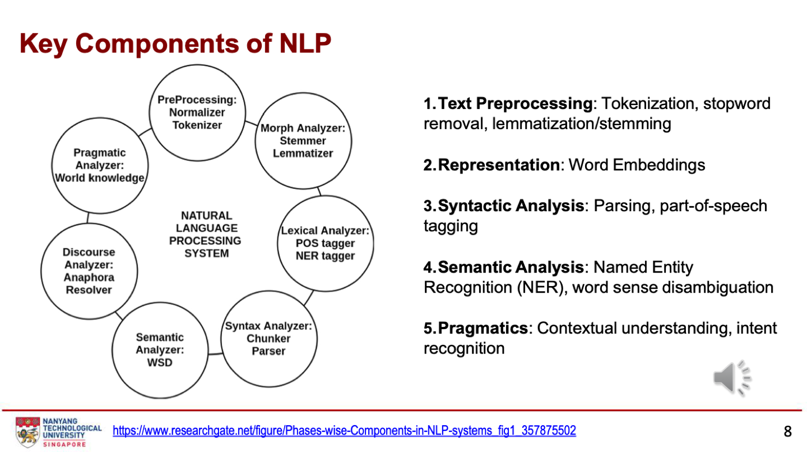
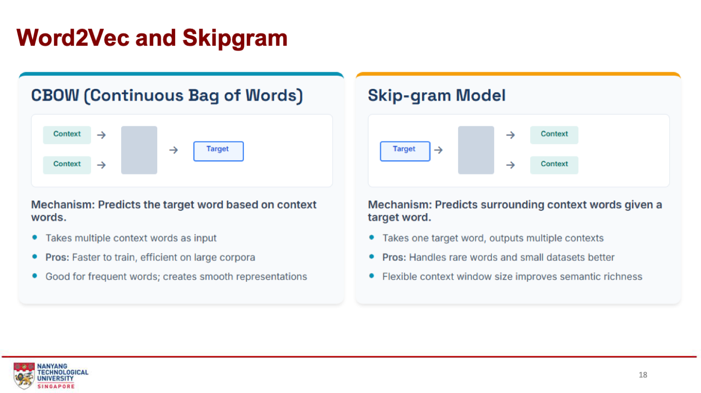
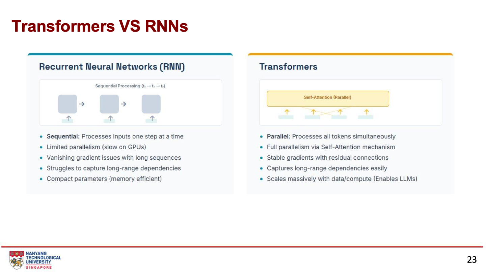
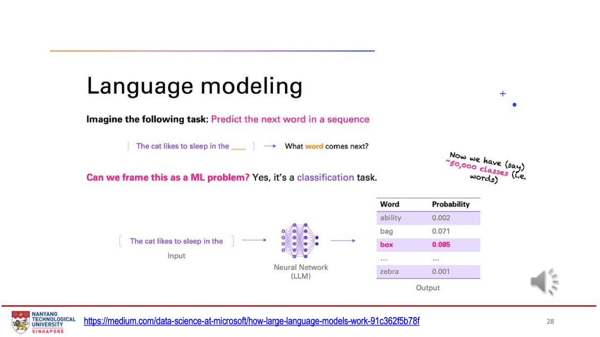
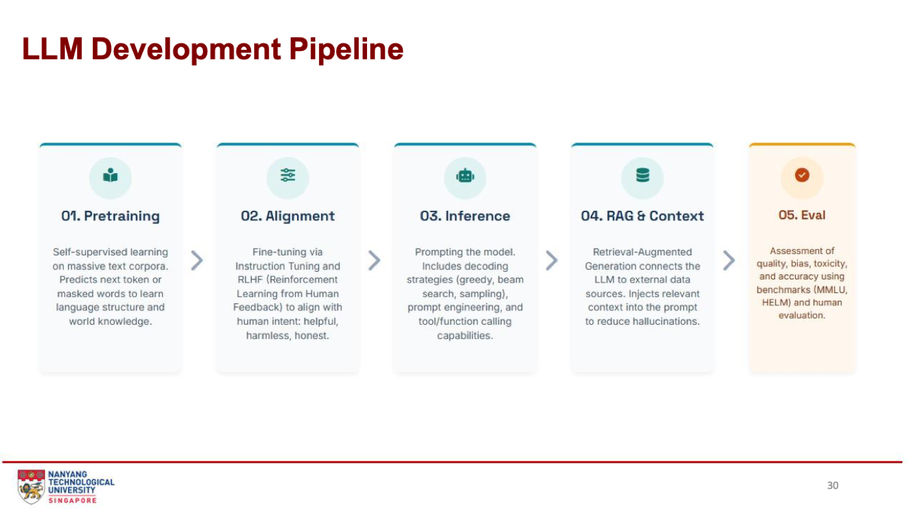
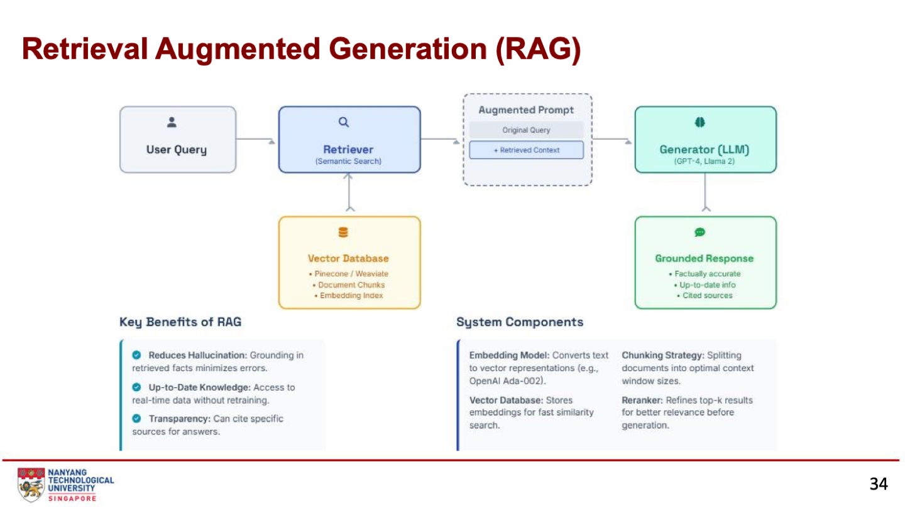

第四周：自然语言处理
NLP 让计算机处理人类语言。本周沿着一条线走：文本预处理 → 句法和语义分析 → 把词变成向量（Word2Vec）→ 序列模型（RNN）→ Transformer 和 self-attention → LLM、GPT 和 RAG。配套有一个评论预处理练习和一个 self-attention 数值演示。
What is Natural Language Processing?｜定义与发展
本章图表 / 方法：NLP 定义；1950s–2023 发展时间线；应用与行业落地（第 3–7 页）。
- 定义：研究让计算机完成与人类语言相关任务的形式化方法、模型和算法；目标是生成有意义、有用的人类语言（文本或语音）。
- NLP 强调整体语境理解，而不是孤立地理解单个词。
- 发展路线：规则 → 统计机器学习 → 深度学习 → Transformer。Transformer 和 LLM 是当前最先进的方法，也被用到计算机视觉、语音识别和时间序列预测。
| 年代 | 事件 |
|---|---|
| 1950s | 基础的语言翻译任务 |
| 1960s | 第一批能做简单语言处理的 NLP 应用 |
| 1970s–80s | 用语言规则和词典编程的系统 |
| 1990s | 转向统计 NLP |
| 2000s | 大规模数据驱动的 NLP |
| 2010s | 深度学习和神经网络的进步 |
| 2017 | Transformer 架构提出 |
| 2023 | 生成式 LLM 应用大规模普及（ChatGPT 2022 年发布） |
行业应用（第 7 页）：Google Translate 每天 30 亿次以上翻译、130+ 语言；Siri / Alexa / Google Assistant；企业客服机器人、文档处理（OCR + 抽取）、内部知识搜索；内容审核（仇恨言论、垃圾信息）。分行业：医疗（临床笔记、诊断）、金融（情绪交易）、法律（合同分析）、教育（自动辅导）、电商（商品搜索）、媒体（内容生成）。
Key Components & Preprocessing｜NLP 的五个组成和预处理
本章图表 / 方法：NLP 系统组件环形图；分词、去停用词、词干提取与词形还原（第 8–9 页）。


| 组成 | 做什么 |
|---|---|
| 1. Text Preprocessing | 分词、去停用词、词形还原 / 词干提取 |
| 2. Representation | 词向量（word embeddings） |
| 3. Syntactic Analysis 句法 | 句法分析（parsing）、词性标注（POS tagging） |
| 4. Semantic Analysis 语义 | 命名实体识别（NER）、词义消歧（WSD） |
| 5. Pragmatics 语用 | 语境理解、意图识别 |
预处理四件事（第 9 页）
| 任务 | 做什么 | 例子 |
|---|---|---|
| Tokenization 分词 | 把文本切成小单位（词、子词或句子） | "Natural Language Processing is amazing!" → 词级：["Natural", "Language", "Processing", "is", "amazing", "!"]；句级：整句一个 |
| Stopword removal | 去掉不太有意义的常见词，降低维度 | "The cat is on the mat" → "cat mat" |
| Stemming 词干提取 | 直接砍掉前缀 / 后缀 | "running" → "run" |
| Lemmatization 词形还原 | 用语言规则找到基本形式 | "better" → "good" |
易错：stemming 只是机械地切词尾，可能切出不是单词的东西；lemmatization 查词典规则，能把 better 还原成 good，stemming 做不到。
Syntax, Semantics & Sentiment｜词性、实体、句法、情感
本章图表 / 方法：POS 标注例句；NER 例句；依存句法树；情感分析（第 10–13 页）。
POS tagging：给每个词标词性
"The quick brown fox jumps over the lazy dog."
| The | quick | brown | fox | jumps | over | the | lazy | dog |
|---|---|---|---|---|---|---|---|---|
| DT | JJ | JJ | NN | VBZ | IN | DT | JJ | NN |
常用标签：NN 名词（单数）、VB / VBZ 动词（原形 / 第三人称单数）、JJ 形容词、DT 限定词、IN 介词。
NER：识别专有名称
"Apple Inc. was founded by Steve Jobs in California." → Apple Inc. = Organization；Steve Jobs = Person；California = Location。
Dependency parsing：词与词的语法关系
"She enjoys playing soccer"：ROOT 是 enjoys；She 是它的 nsubj（名词性主语）；playing 是 xcomp；soccer 是 playing 的 dobj（直接宾语）。
Sentiment analysis：判断情感
判断文本是正面、中性还是负面。"The movie was fantastic!" → Positive。用于社交媒体监测、客户反馈分析。
Word Embeddings & Word2Vec｜把词变成向量
本章图表 / 方法：词向量与 king − man + woman ≈ queen；CBOW 与 Skip-gram 对比（第 14–18 页）。
- Word embedding：把词表示为多维空间中的向量。向量之间的距离和方向反映词的相似度和关系。
- 经典例子：king − man + woman ≈ queen；man → king 的方向和 woman → queen 一样。
- 用于文本分类、情感分析、机器翻译等。
- BERT 和 GPT 用 Transformer 动态理解词的上下文（同一个词在不同句子里向量不同）。


| CBOW（Continuous Bag of Words） | Skip-gram | |
|---|---|---|
| 机制 | 用上下文词预测目标词 | 用目标词预测上下文词 |
| 输入 → 输出 | 多个上下文词 → 一个目标词 | 一个目标词 → 多个上下文词（词表上的概率分布） |
| 优点 | 训练更快，适合大语料；常见词效果好，表示平滑 | 罕见词和小数据集处理得更好；上下文窗口灵活，语义更丰富 |
记法：CBOW = 从周围猜中间；Skip-gram = 从中间猜周围。
Seq2Seq & RNN｜处理序列
本章图表 / 方法：Seq2Seq 编码器-解码器；RNN 核心概念与展开图；LSTM / GRU（第 19–22 页）。
Seq2Seq
- 由编码器和解码器组成：编码器把输入序列压成固定大小的隐藏表示，解码器用它生成输出序列。
- 输入和输出长度可以不同（适合翻译）。
- 用输入-输出序列对训练，目标是让正确输出序列的似然最大。
RNN（Recurrent Neural Network）
NLP 中顺序和上下文非常重要。RNN 把上一步的输出反馈给下一步：
- Hidden state（记忆）：保存之前输入的关键信息，hₜ₋₁ → hₜ → hₜ₊₁。
- 参数共享：所有时间步用同一组权重，模型紧凑，能处理变长输入。
- 问题：普通 RNN 有梯度消失；只能顺序计算，难以并行，训练慢；很长距离的上下文记不住。
- LSTM / GRU：用门（输入门、遗忘门、输出门）控制信息保留，缓解长序列问题。
Transformers vs RNNs & Self-Attention｜为什么 Transformer 取代了 RNN
本章图表 / 方法：RNN 与 Transformer 对比；注意力图 “The teacher taught the student with a book”；self-attention 四步；self_attention_walkthrough.ipynb 数值演示（第 23–27、31–32 页）。


| RNN | Transformer | |
|---|---|---|
| 处理方式 | 顺序，一次一个时间步 | 并行，同时处理所有 token（self-attention） |
| GPU 利用 | 难以并行，慢 | 完全并行，训练和推理快 |
| 梯度 | 长序列梯度消失 | 残差连接让梯度稳定 |
| 长距离依赖 | 难 | 容易 |
| 其他 | 参数紧凑，省内存 | 随数据和算力大规模扩展，催生了 LLM |
注意力图（第 27 页）："The teacher taught the student with a book" 中，teacher 和 book 连接很强。self-attention 学到的权重表示每个词对其他每个词有多重要，不只看相邻的词。
Self-attention 四步（第 32 页）
- 输入表示：每个词变成 embedding 向量。
- Q、K、V：Query 是当前关注的词，Key 代表其他词，Value 是词的实际信息。三个矩阵在训练中学到。
- 注意力分数：Q · K（相似度）→ 除以 √dₖ（梯度稳定）→ softmax 变成概率。
- 加权求和：每个 V 乘以自己的分数再相加，得到带上下文的新表示。
Attention(Q, K, V) = softmax(Q·Kᵀ / √dₖ) · VNotebook：“It” 怎么找到 “fox”
句子：The quick brown fox jumped over the wall… It was so agile。每个词用 4 维向量表示 [有生命, 动作, 修饰, 位置]，W_Q 和 W_K 把“有生命”这一维放大 3 倍，dₖ = 4。
- q(It) = [2.1, 0, 0, 0.275]，k(fox) = [3, 0, 0, 0.1]
- 分数(fox) = (2.1 × 3 + 0.275 × 0.1) / √4 = 6.33 / 2 ≈ 3.16；分数(It 自己) ≈ 2.24；分数(wall) ≈ 0.66；其他词接近 0。
- softmax 后：fox 0.535、It 0.213、wall 0.044，其余每个约 0.023。
fox 离 It 有 5 个词，但点积一下就找到了它；RNN 则会随距离衰减。
def self_attention(Q, K, V):
d_k = K.shape[-1]
scores = (Q @ K.T) / np.sqrt(d_k) # n × n 分数矩阵
attn = softmax(scores, axis=-1) # 每行加起来等于 1
return attn @ V, attnCausal masking（因果掩码）：GPT 这类只有解码器的模型生成时不能偷看后面的词，所以把分数矩阵右上三角设为 −∞，softmax 后权重为 0。It 在 fox 之后，仍然能看到 fox。
Language Modeling, LLM Pipeline & GPT｜大语言模型
本章图表 / 方法：下一个词预测；自然语言生成；LLM 开发五步；GPT 系列（第 28–30、33 页）。


- Language modeling：预测下一个词。这是一个分类任务，类别就是词表里的所有词（约 5 万类）。例：box 0.085、bag 0.071、ability 0.002、zebra 0.001。
- Natural language generation：训练好后，一次预测一个词，把预测的词接回输入，继续预测下一个。LLM 是生成式 AI 的例子。


| 步骤 | 做什么 |
|---|---|
| 1. Pretraining | 在海量文本上自监督学习，预测下一个词或被遮住的词，学语言结构和世界知识 |
| 2. Alignment | 指令微调 + RLHF，让模型有用、无害、诚实 |
| 3. Inference | 使用模型：解码策略（greedy、beam search、sampling）、prompt engineering、工具 / 函数调用 |
| 4. RAG & Context | 连接外部数据，把相关内容放进 prompt，减少幻觉 |
| 5. Eval | 评估质量、偏差、毒性、准确性：基准测试（MMLU、HELM）+ 人工评估 |
GPT：Generative Pretrained Transformer
OpenAI 开发，用 Transformer 的解码器，自回归：从左到右预测下一个 token。"The cat sat" → 预测 "on" → 输入变成 "The cat sat on" → 预测 "the"。
| 版本 | 参数 | 特点 |
|---|---|---|
| GPT-1（2018） | 1.17 亿 | 验证“无监督预训练 + 微调”可行 |
| GPT-2（2019） | 15 亿 | 出现 zero-shot 能力，能写连贯段落 |
| GPT-3（2020） | 1,750 亿 | few-shot 学习，能推理和写代码 |
| GPT-4（2023） | — | 多模态（文本 + 图像），推理强，能通过专业考试 |
训练：大规模无监督网页文本预训练 + RLHF 对齐。能力：创意写作、摘要、翻译、代码生成、复杂推理。
Retrieval Augmented Generation (RAG)｜先检索再生成
本章图表 / 方法：RAG 架构图：检索器、向量数据库、增强 prompt、生成器（第 34 页）。


流程：用户问题 → 检索器（语义搜索）从向量数据库找相关文档片段 → 把“原问题 + 检索到的内容”拼成增强 prompt → LLM 生成有依据的回答。
| 组件 | 作用 |
|---|---|
| Embedding model | 把文本变成向量（如 OpenAI Ada-002） |
| Vector database | 存向量，快速做相似度搜索（Pinecone、Weaviate） |
| Chunking strategy | 把文档切成适合上下文窗口的小块 |
| Reranker | 生成前把检索到的 top-k 结果重新排序，提高相关性 |
好处：① 减少幻觉（回答基于检索到的事实）② 知识保持最新，不用重新训练 ③ 透明，能引用来源。
NLP for Social Good & Challenges｜心理健康机器人与六大挑战
本章图表 / 方法：心理健康聊天机器人（Twill）；NLP 六大挑战（第 35–36 页）。
心理健康聊天机器人：提供共情对话、基于认知行为疗法（CBT）的练习、危机升级（检测伤害意图）。例：Twill（原 Happify），被 Amazon 等用在企业健康计划里，追踪情绪、推荐活动、减轻压力。
- 好处：可及、24/7、减少病耻感、成本低。
- 风险：临床准确性、数据隐私、缺乏真正的共情、过度依赖。
- 部署要求：透明（明确告知是 AI）、隐私（妥善处理敏感健康信息）、安全（可靠的人工接管）、同意（明确选择加入）。
| 挑战 | 说明 |
|---|---|
| Linguistic ambiguity | 讽刺、成语、比喻：字面意思和意图不同 |
| Context & world knowledge | 文化差异、时间背景、常识推理 |
| Data scarcity & domain shift | 小语种和专业领域（法律、医疗）数据少，表现下降 |
| Bias, fairness & safety | 刻板印象、毒性内容、隐私泄露 |
| Efficiency & cost | 训练和推理的算力、延迟、能耗 |
| Hallucinations & reliability | 事实性、来源可查性，听起来合理但错误的内容 |
NLP Tutorial｜评论预处理练习
本章图表 / 方法：NLP_Tutorial_1.ipynb 原题与 NLP_Answers.ipynb 答案：16 条产品评论的预处理、高频词、平均长度。
背景：数字营销公司要分析产品评论的主题和情感。数据是 16 条评论，评分 5 星 5 条、1 星 5 条、3 星 6 条。
a) 预处理函数
def preprocess_text(text):
text = text.lower() # 1 转小写
text = re.sub(r'[^a-zA-Z\s]', '', text) # 2 去掉标点和数字
tokens = word_tokenize(text) # 3 分词
stop_words = set(stopwords.words('english'))
tokens = [t for t in tokens if t not in stop_words] # 4 去停用词
lemmatizer = WordNetLemmatizer()
tokens = [lemmatizer.lemmatize(t) for t in tokens] # 5 词形还原
return tokensb) 每个评分最常见的 5 个词
| 评分 | Top 5（出现次数） |
|---|---|
| 5 星 | product 6、amazing 6、love 4、easy 3、use 3 |
| 1 星 | terrible 6、quality 5、broke 3、would 2、recommend 2 |
| 3 星 | okay 6、value 5、product 4、decent 4、good 3 |
all_words = [w for tokens in reviews_for_rating for w in tokens] # 把多条评论拉平
Counter(all_words).most_common(5)c) 平均长度
预处理后平均 7.38 个 token；原始评论平均 70.38 个字符。
值得注意：1 星评论里出现 “recommend”，因为 “not” 是停用词被删掉了，“would not recommend” 只剩 “would recommend”。去停用词会丢掉否定词，做情感分析时要小心。
自测
本章图表 / 方法：按考试常见题型整理，先自己答再展开。
1. NLP 的五个组成部分？
文本预处理、表示（词向量）、句法分析（parsing、POS）、语义分析（NER、词义消歧）、语用（语境、意图）。
2. "studies" 用 stemming 和 lemmatization 分别得到什么？"better" 呢？
Stemming 机械切词尾，可能得到 "studi"；lemmatization 得到 "study"。"better" 只有 lemmatization 能还原成 "good"。
3. "The quick brown fox" 中 quick 和 fox 的 POS 标签？
quick 是 JJ（形容词），fox 是 NN（单数名词）。
4. "Apple Inc. was founded by Steve Jobs in California." 的 NER 结果？
Apple Inc. = Organization；Steve Jobs = Person；California = Location。
5. CBOW 和 Skip-gram 的区别？哪个更适合罕见词？
CBOW 用上下文预测目标词，训练快、适合大语料和常见词；Skip-gram 用目标词预测上下文，更适合罕见词和小数据集。
6. king − man + woman ≈ ? 说明词向量的什么性质？
queen。向量之间的距离和方向反映词的关系。
7. RNN 的三个问题？LSTM / GRU 怎么缓解？
梯度消失、只能顺序计算（训练慢）、长距离依赖难。LSTM / GRU 用门控制信息的保留和遗忘。
8. Transformer 比 RNN 好在哪三点？
并行处理（训练推理快）、能捕捉长距离依赖、可扩展到大数据大模型。
9. q = (1, 0)，三个词的 k 为 (1, 0)、(0, 1)、(1, 1)，dₖ = 2，注意力权重？
点积 1、0、1 → 除以 √2 得 0.71、0、0.71 → softmax ≈ 0.40、0.20、0.40。
10. GPT 是编码器还是解码器？什么叫自回归？
解码器。自回归是从左到右一次预测一个 token，再把它接回输入继续预测。
11. LLM 开发五步？
Pretraining → Alignment（指令微调、RLHF）→ Inference → RAG & Context → Eval。
12. RAG 的三个好处？向量数据库的作用？
减少幻觉、知识最新不用重训、可引用来源。向量数据库存文档的 embedding，用于快速相似度搜索。